INSP Network Look
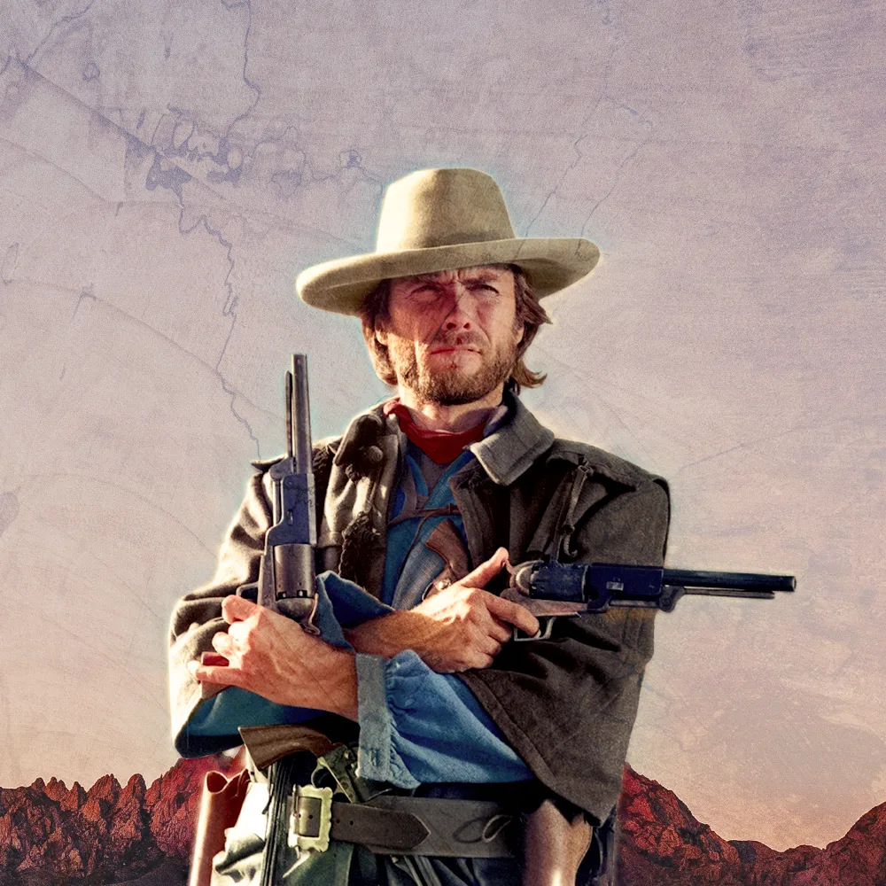
The Ask
INSP's brand is about two things — big heroes and the epic scenery of the old west. After changing their logo in 2022, they wanted to update the network look and brand to match. While the previous brand emphasized the classic nature of their programming, we wanted the new brand to be bolder, more vibrant, and a little in your face — without leaving their main demographic of 65+ behind.
The Result
The resulting brand is a simple set of elements that puts the stars front and center, while oversized text turns the volume up a bit. Due to the nature of older acquired programming mixed with INSP originals, stills are used to bring cohesion to both. A blue and "y-orange" color scheme conveys the classic trust of a small-town sheriff. Texture brings a tactile roughness of the west. A leather tag serves as the frame for the logo — giving the brand a hand-tailored, man-made feel that matches the authenticity of the content.
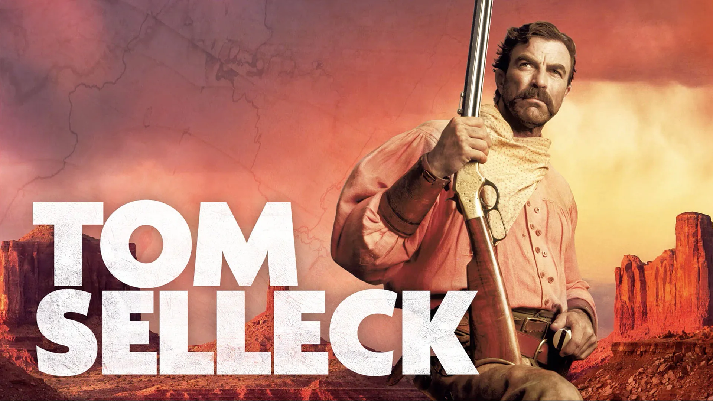
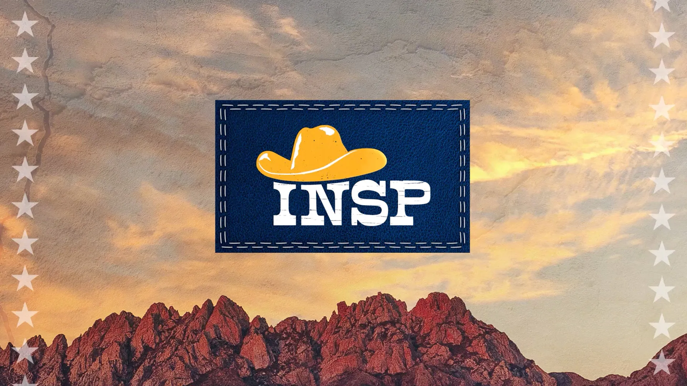
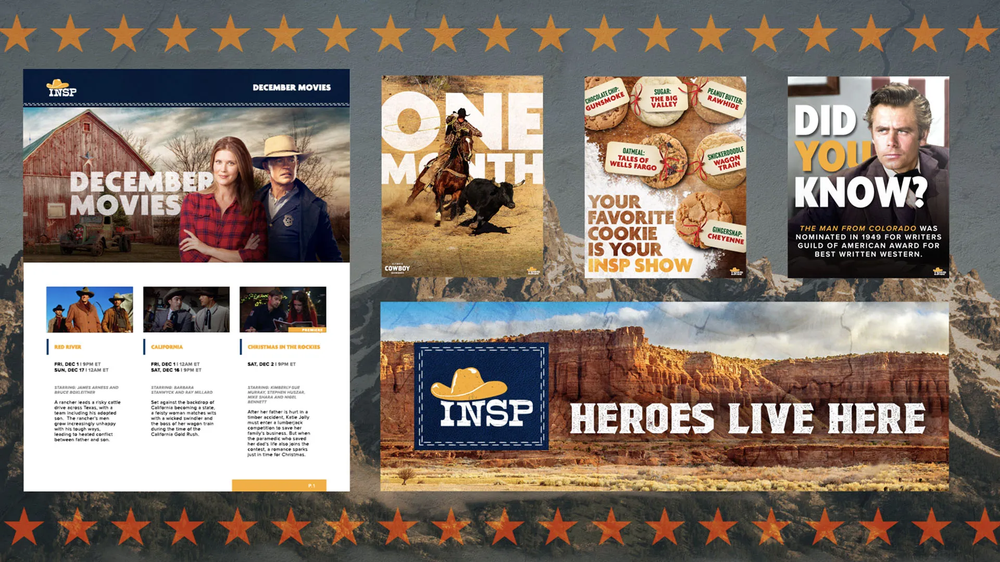
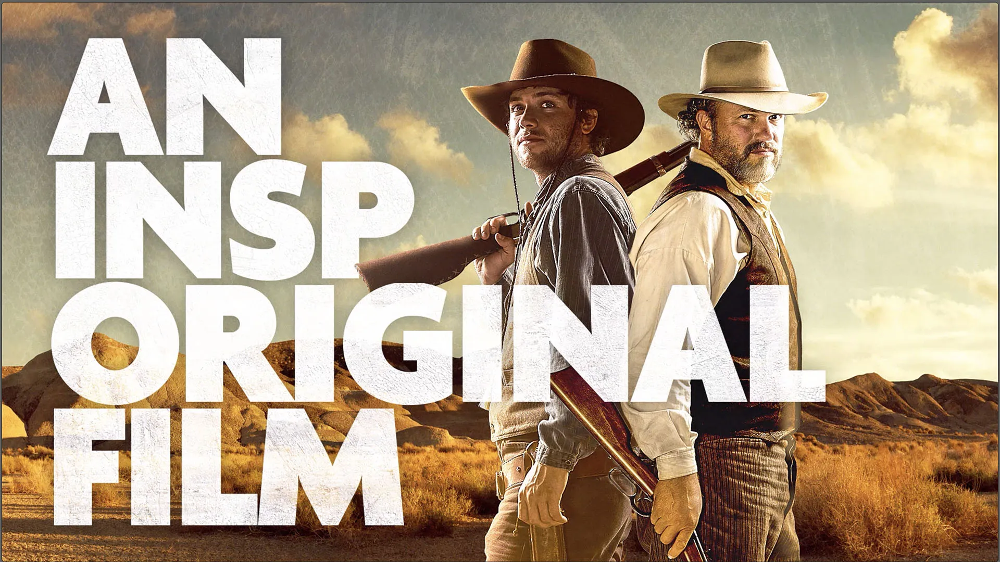
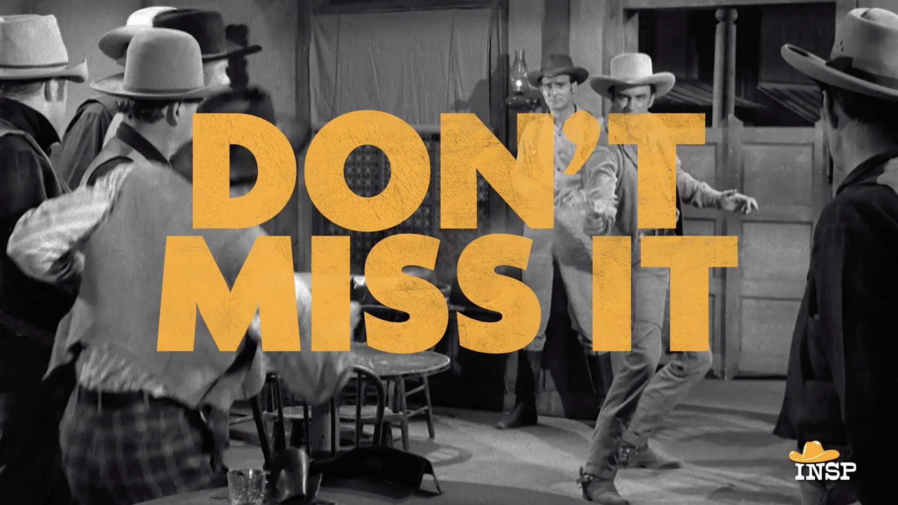
Behind the Curtain
The evolution of an idea along the journey to approval is fascinating. Not everything is in your control, even if it's your project — decision-makers and stakeholders all help shape the final network look. The images below show the various pages of pitches, ending with the pitch that gave us the look that launched on-air. Ultimately the journey could be summed up in two words: Simplify and Stars.
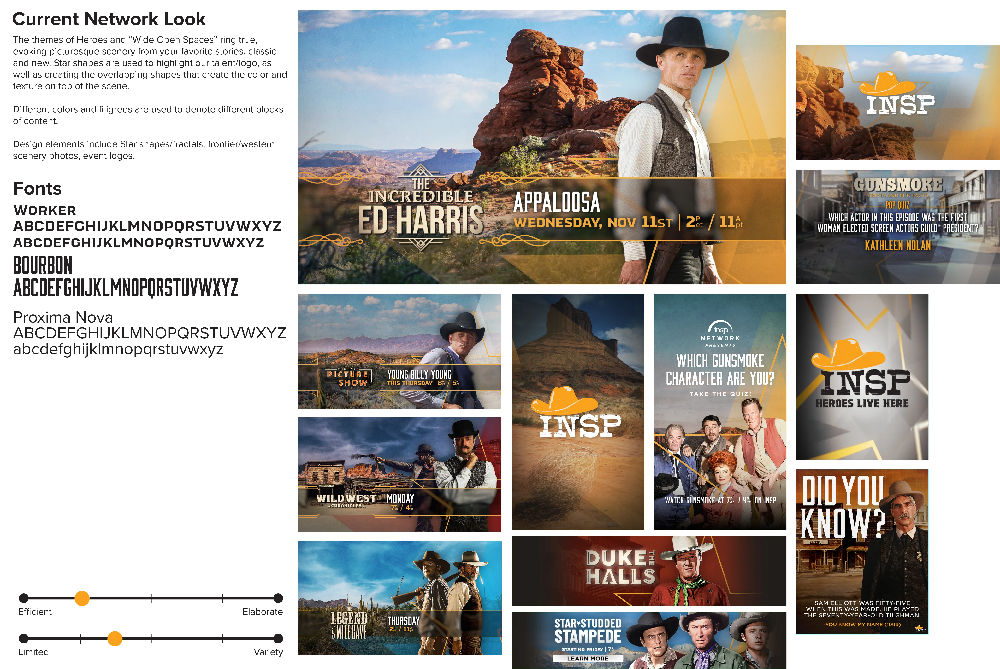
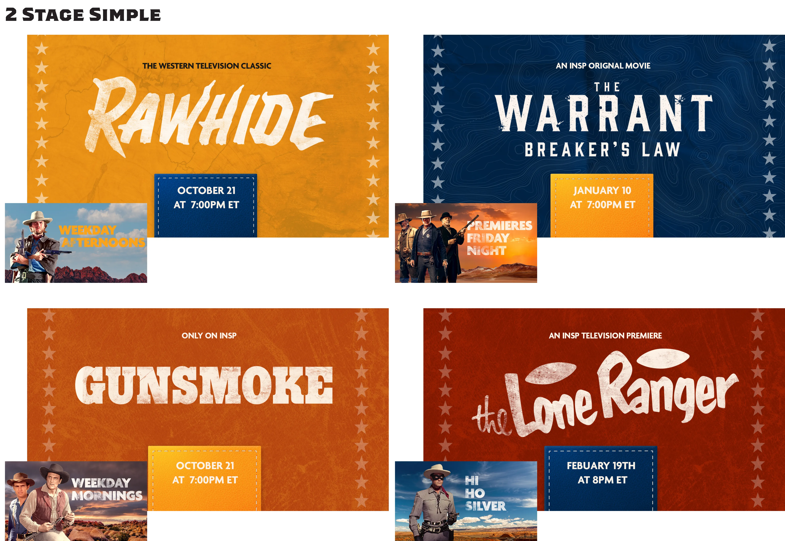
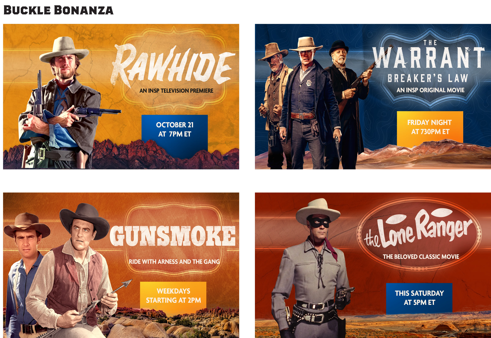
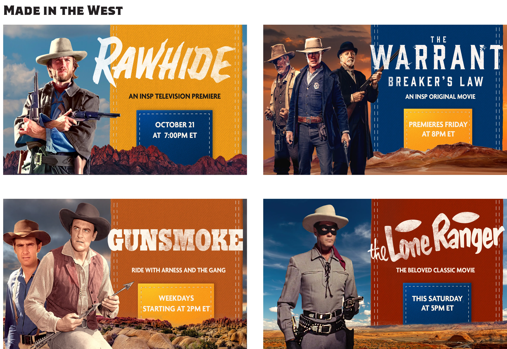
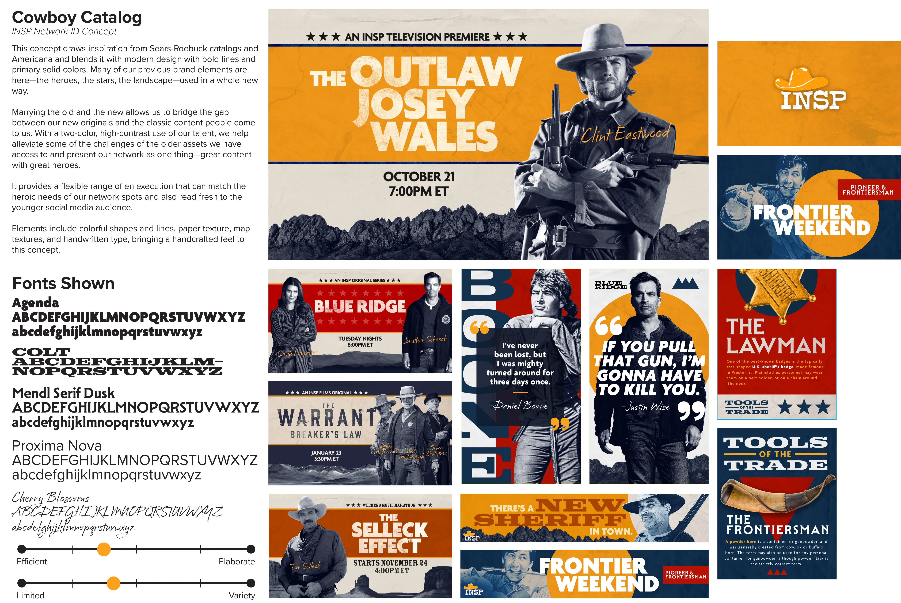
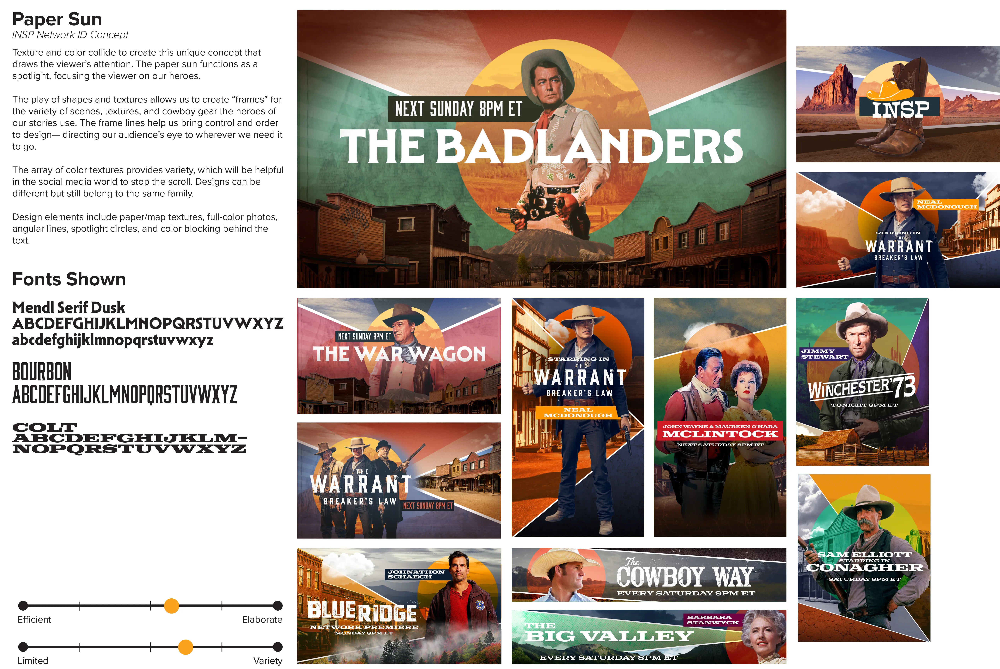
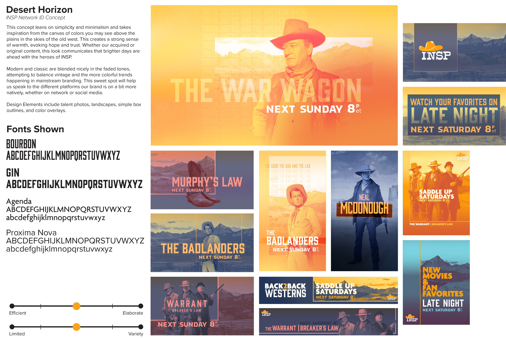
- Art Direction / Motion Design: Jared Hanline
- Co-Art Director: Oscar Arrango
- Design: Patrick McGill, Madelyn Brotherton
- Motion Design: Mason Adams, Justin Warren, Tyler Outen, Kaitlyn Simpson